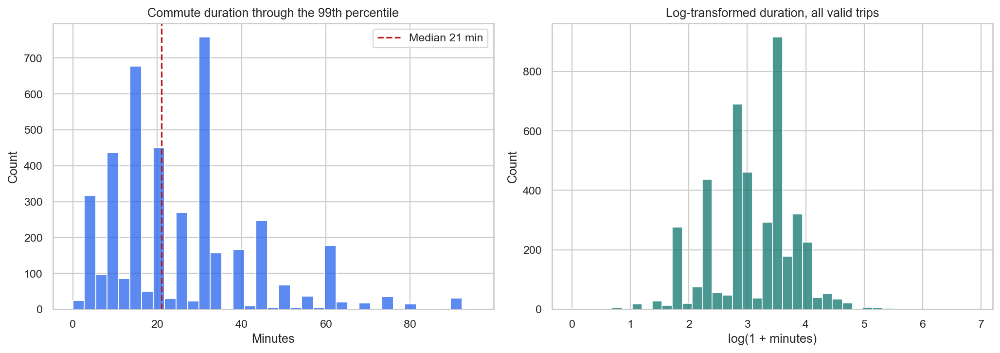
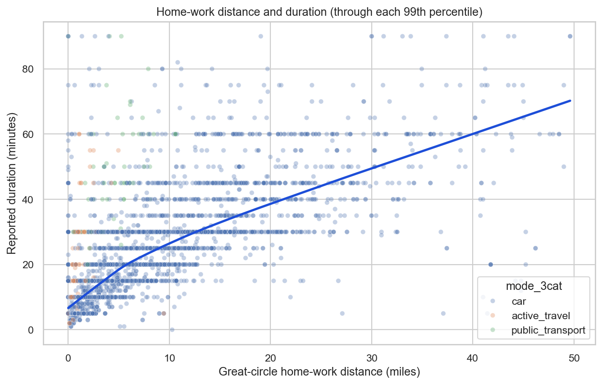
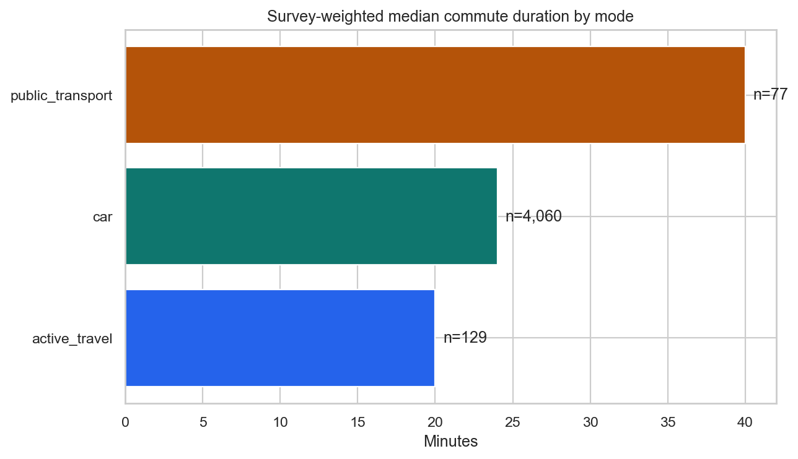
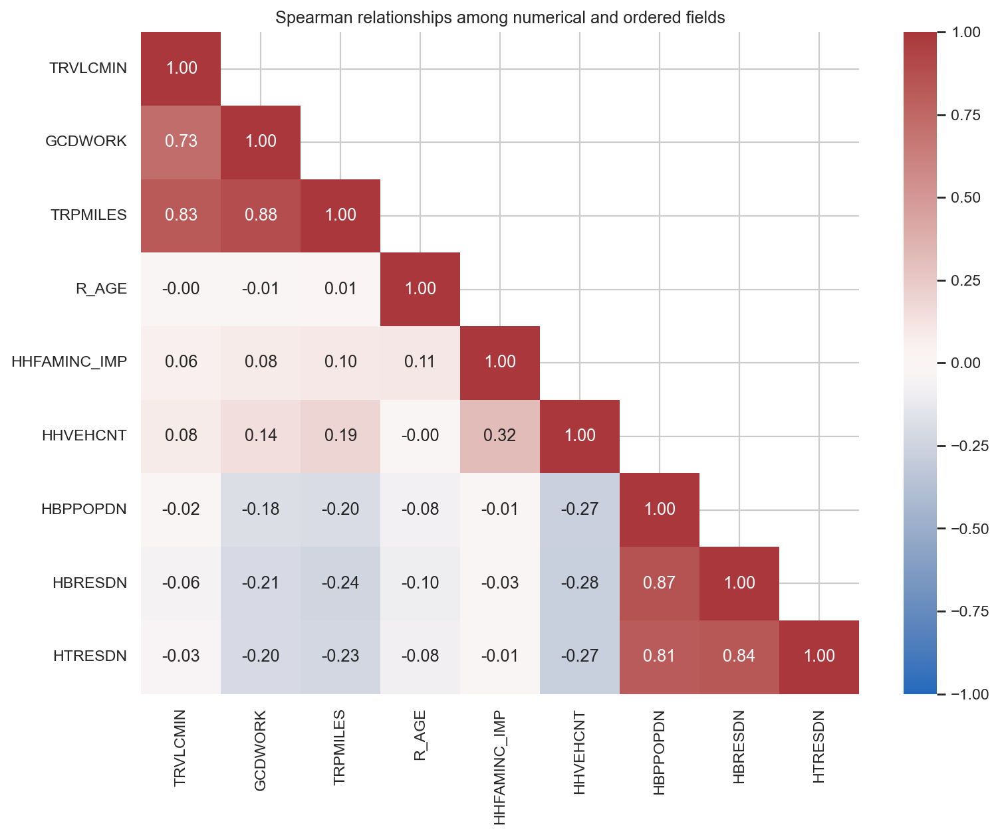

NHTS 2022 Question 4: commute-duration exploration
Proposed question: For adult weekday home-based work trips, how accurately can home-work distance, planned mode, departure period, trip direction, and broad residential context predict reported trip duration?
The analysis contains 4,266.0 trips with valid duration from 4,269.0 eligible trips, representing 2,384.0 people in 1,928.0 households. The unweighted median duration is 21.0 minutes; the survey-weighted median is 25.0 minutes.
Interpretation boundary: exploratory associations are descriptive. Actual trip miles are shown only as a leakage diagnostic. Final prediction must split by household, perform all preprocessing inside training folds, retain an untouched test set, and avoid causal language.
Outcome and sample summary
| trip_n |
valid_duration_n |
missing_duration_n |
zero_duration_n |
people_n |
household_n |
mean_minutes |
median_minutes |
p90_minutes |
p95_minutes |
p99_minutes |
maximum_minutes |
skewness |
weighted_median_minutes |
weighted_p90_minutes |
weight_effective_sample_size |
| 4269 |
4266 |
3 |
1 |
2384 |
1928 |
27.188 |
21.000 |
50.000 |
60.000 |
96.400 |
950.000 |
13.335 |
25.000 |
51.000 |
1733.634 |
Numerical relationships with duration
| predictor |
label |
role |
complete_n |
missing_pct |
spearman_rho |
cluster_bootstrap_ci_low |
cluster_bootstrap_ci_high |
weighted_spearman_rho |
| TRPMILES |
Realised trip miles |
leakage diagnostic |
4266 |
0.000 |
0.826 |
0.810 |
0.842 |
0.810 |
| GCDWORK |
Great-circle home-work distance (miles) |
candidate |
3811 |
10.682 |
0.726 |
0.699 |
0.755 |
0.698 |
| HHVEHCNT |
Household vehicle count |
candidate |
4266 |
0.000 |
0.084 |
0.042 |
0.130 |
0.020 |
| HHFAMINC_IMP |
Household income band (imputed) |
candidate |
4266 |
0.000 |
0.062 |
0.020 |
0.106 |
0.059 |
| HBRESDN |
Home block-group residential-density band |
density alternative |
4213 |
1.242 |
-0.058 |
-0.101 |
-0.017 |
-0.052 |
| HTRESDN |
Home census-tract residential-density band |
density alternative |
4233 |
0.773 |
-0.032 |
-0.075 |
0.010 |
-0.045 |
| HBPPOPDN |
Home block-group population-density band |
density alternative |
4247 |
0.445 |
-0.021 |
-0.065 |
0.022 |
-0.016 |
| R_AGE |
Respondent age |
candidate |
4266 |
0.000 |
-0.001 |
-0.045 |
0.050 |
0.017 |
Categorical relationships with duration
| predictor |
label |
role |
complete_n |
levels |
rank_eta |
dominant_level_pct |
| MSACAT |
Metropolitan-area category |
candidate alternative |
4266 |
4 |
0.199 |
43.546 |
| mode_3cat |
Trip mode: car, public transport, active travel |
candidate if mode is known |
4266 |
3 |
0.161 |
95.151 |
| RAIL |
Household MSA heavy-rail status |
candidate |
4266 |
2 |
0.145 |
79.175 |
| departure_period |
Departure-time period |
candidate |
4266 |
5 |
0.098 |
33.685 |
| HOMEOWN |
Housing tenure |
candidate |
4266 |
4 |
0.058 |
57.718 |
| TRAVDAY |
Travel day of week |
candidate |
4266 |
5 |
0.053 |
25.650 |
| URBRUR |
Household urban/rural status |
candidate |
4266 |
2 |
0.051 |
78.262 |
| trip_direction |
Home-to-work, work-to-home, or other HBW |
candidate |
4266 |
3 |
0.050 |
47.903 |
| R_SEX_IMP |
Respondent sex (imputed) |
candidate |
4266 |
2 |
0.043 |
54.954 |
Duration by mode
| group |
raw_n |
people_n |
weighted_share_pct |
mean_minutes |
median_minutes |
p90_minutes |
weighted_median_minutes |
weighted_p90_minutes |
| car |
4060 |
2263 |
94.898 |
26.942 |
20.000 |
50.000 |
24.000 |
50.000 |
| active_travel |
129 |
74 |
3.010 |
21.287 |
15.000 |
30.000 |
20.000 |
45.000 |
| public_transport |
77 |
52 |
2.092 |
50.052 |
45.000 |
90.000 |
40.000 |
69.233 |
Duration by direction
| group |
raw_n |
people_n |
weighted_share_pct |
mean_minutes |
median_minutes |
p90_minutes |
weighted_median_minutes |
weighted_p90_minutes |
| home_to_work |
2044 |
1985 |
47.491 |
25.742 |
20.000 |
45.000 |
20.000 |
47.946 |
| work_to_home |
1709 |
1658 |
40.330 |
27.569 |
25.000 |
50.000 |
25.000 |
55.000 |
| other_home_based_work |
513 |
327 |
12.180 |
31.680 |
25.000 |
60.000 |
30.000 |
75.000 |
Duration by departure period
| group |
raw_n |
people_n |
weighted_share_pct |
mean_minutes |
median_minutes |
p90_minutes |
weighted_median_minutes |
weighted_p90_minutes |
| am_peak_06_08 |
1437 |
1428 |
33.244 |
26.489 |
22.000 |
45.000 |
25.000 |
50.000 |
| midday_09_15 |
1150 |
985 |
26.907 |
27.116 |
20.000 |
50.000 |
20.000 |
50.657 |
| pm_peak_16_18 |
1115 |
1099 |
24.972 |
28.179 |
25.000 |
55.000 |
29.446 |
55.685 |
| overnight_00_05 |
300 |
299 |
8.121 |
30.597 |
30.000 |
55.500 |
25.000 |
58.187 |
| evening_19_23 |
264 |
246 |
6.756 |
23.246 |
20.000 |
45.000 |
20.000 |
45.000 |
Strong categorical predictor overlaps
| categorical_1 |
categorical_2 |
cramers_v_corrected |
complete_n |
levels_1 |
levels_2 |
| RAIL |
MSACAT |
0.979 |
4269 |
2 |
4 |
| trip_direction |
departure_period |
0.556 |
4266 |
3 |
5 |
Strong numerical predictor overlaps
| numeric_1 |
numeric_2 |
spearman_rho |
complete_n |
| GCDWORK |
TRPMILES |
0.884 |
3813 |
| HBPPOPDN |
HBRESDN |
0.866 |
4199 |
| HBRESDN |
HTRESDN |
0.843 |
4187 |
| HBPPOPDN |
HTRESDN |
0.814 |
4217 |
Extreme-value sensitivity
| analysis |
n |
duration_max |
duration_median |
gcdwork_duration_spearman |
| all valid duration values |
3811 |
950.000 |
20.000 |
0.726 |
| duration at or below sample p99 |
3776 |
95.000 |
20.000 |
0.738 |
Distance-duration relationship by mode
| mode |
complete_n |
gcdwork_duration_spearman |
median_duration |
median_gcdwork |
| car |
3633 |
0.759 |
20.000 |
6.477 |
| active_travel |
114 |
0.631 |
15.000 |
0.783 |
| public_transport |
64 |
0.639 |
45.000 |
4.596 |
Figures




Recommended proposal resolution
- Use reported duration in minutes as the outcome and adult weekday home-based work trips as the population.
- Define prediction time as immediately before departure, after planned mode is known. This makes mode and departure period eligible while excluding realised trip miles.
- Use a median-duration rule as baseline, a transparent Gamma/log-linear or quantile regression as the main model, and a random forest or gradient-boosted tree as the nonlinear benchmark.
- Use household-grouped cross-validation and reserve a final household or Census-division holdout. Report MAE and median absolute error in minutes, tail error, calibration of prediction intervals, and subgroup performance.
- Pre-register sensitivity analyses for zero/extreme durations, missing
GCDWORK, car-only trips, outbound home-to-work trips, survey weights, and alternative density measures.